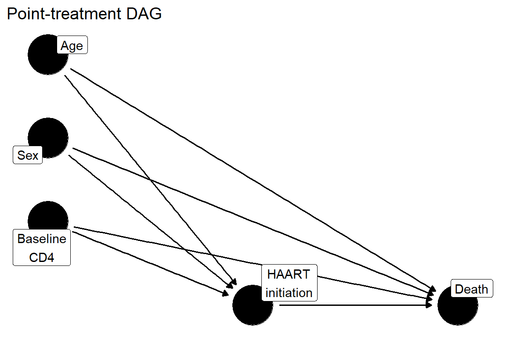
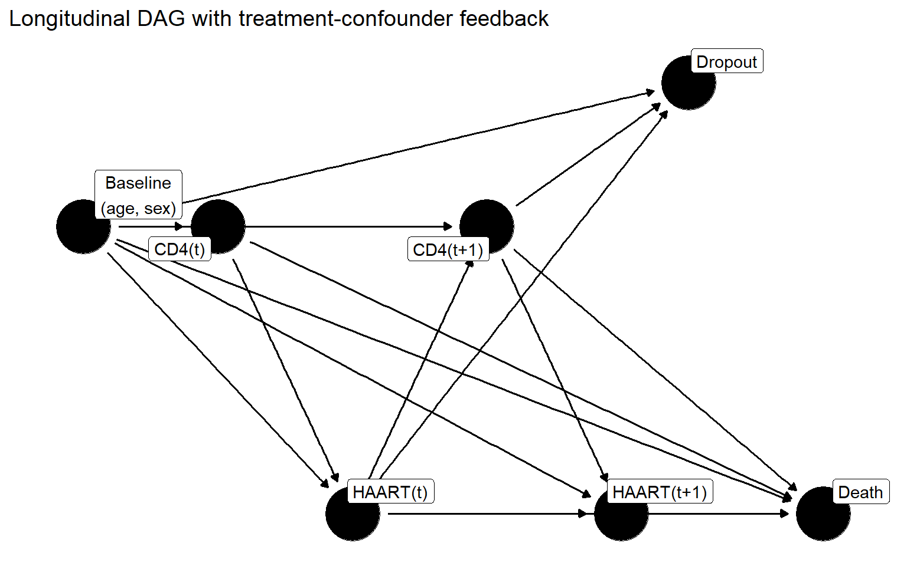
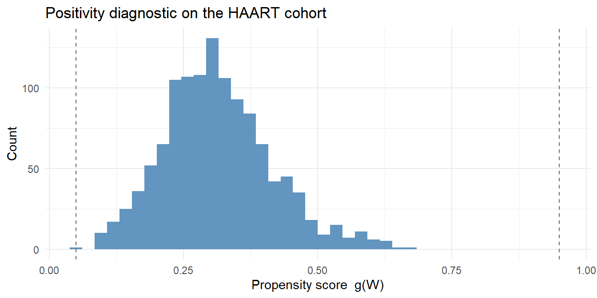

A hands-on, four-hour workshop on the running HAART cohort
Workshop at a glance
Total duration: about 4 hours (four 50- to 60-minute modules, plus short breaks and exercise time).
Intended audience: participants who have seen regression but are new to causal inference and targeted learning.
What you will be able to do by the end: state a causal question as a target trial and walk the seven-step Causal Roadmap. Estimate a point-treatment effect three ways (g-computation, IPTW, and TMLE by hand and with software) on a real cohort, then read the result in clinical terms. Explain why time-varying confounding breaks standard regression and what longitudinal g-methods do about it. Set up a realistic “shift the adherence distribution” intervention with lmtp, and run the basic positivity diagnostic that every analysis needs.
This chapter is a self-contained workshop, a condensed tour of the full handbook run on the single running case study: the HIV antiretroviral therapy (haartdat) cohort. Every method estimates the same effect on the same patients. Each module opens with a short “why this method exists” lead-in, then gives you runnable code, an interpretation of the number in mortality terms, and an exercise with a collapsible worked solution. The full handbook chapters develop each topic in more depth, and cross-references point you there.
2.1 Prerequisites and setup
This workshop assumes R 4.2 or later. The code uses the following packages: tidyverse (data handling and plotting), ipw (the cohort), SuperLearner and tmle (targeted learning), lmtp (modified treatment policies), ggdag and dagitty (DAGs), and broom (tidy model output). The setup chunk below loads them, installing any that are missing, and then loads the shared cohort.
Show code
needed <-c("tidyverse", "ipw", "SuperLearner", "tmle", "lmtp","ggdag", "dagitty", "broom")to_install <- needed[!vapply(needed, requireNamespace, logical(1), quietly =TRUE)]if (length(to_install)) install.packages(to_install)library(tidyverse)library(ggdag)library(dagitty)# Shared running cohort: creates `haartdat` (longitudinal) and# `haart_baseline` (one row per patient). Used by every Part II chapter.source("_data/load-haart-cohort.R")n <-nrow(haart_baseline)cat("Patients in baseline snapshot:", n,"| % ever HAART:", round(100*mean(haart_baseline$ever_haart), 1),"| % died:", round(100*mean(haart_baseline$died), 1), "\n")#> Patients in baseline snapshot: 1200 | % ever HAART: 31.3 | % died: 2.6
The cohort follows 1,200 simulated people living with HIV from seroconversion, recording time-varying CD4, HAART initiation, mortality, and dropout. The point-treatment modules use haart_baseline, a one-row-per-patient snapshot. Module 3 returns to the longitudinal structure. See the Running Case Study for the full data description.
A teaching simplification you should know about
The point-treatment modules define treatment as “ever initiated HAART during follow-up” and analyze it as a baseline exposure. As the case study caveat explains, that collapse induces immortal time bias by construction, since “ever initiators” are guaranteed to have survived until initiation. We accept it here only to teach estimator mechanics on one familiar dataset. An unbiased analysis needs the longitudinal g-methods of Module 3 and Part III.
Notation and glossary
The workshop and the rest of the handbook share these symbols.
Symbol / term
Meaning
\(A\)
Treatment (here ever_haart, or time-varying haartind)
\(W\)
Baseline covariates (age, sex, baseline CD4)
\(L\)
Time-varying covariate (here CD4 over time)
\(Y\)
Outcome (here died)
\(Y(a)\)
Potential outcome under treatment level \(a\); written \(Y(1)\) and \(Y(0)\) for the two levels of a binary treatment
\(g(W) = P(A=1 \mid W)\)
Propensity score (some texts write it \(e(W)\))
\(Q(A, W) = E[Y \mid A, W]\)
Outcome regression
Propensity score
Probability of treatment given covariates
Clever covariate
The propensity-derived term TMLE uses to update the outcome model
Influence function
The per-patient contribution to an estimate; its spread sets the standard error
ATE
Average treatment effect, \(E[Y(1) - Y(0)]\)
Risk difference
ATE on the probability scale, \(E[Y(1)] - E[Y(0)]\)
Agenda
Module
Time
Topic
Objectives
1
~50 min
Causal Roadmap and identification
State a causal question as a target trial; name the seven steps; explain consistency, exchangeability, positivity in HAART terms; read the g-computation formula
2
~60 min
Point-treatment estimation
Estimate the HAART effect with g-computation, IPTW, and TMLE (by hand and with software); read the standard error; swap in Super Learner
3
~60 min
Longitudinal causal inference
Explain treatment-confounder feedback with a DAG; run backwards g-computation; understand sequential double robustness
4
~50 min
Realistic interventions and diagnostics
Set up an lmtp modified treatment policy; run the positivity diagnostic; know what sensitivity analysis adds
The exercises are inline, each with a collapsible solution right beside it, so you can attempt one and check it before moving on rather than flipping to an answer key at the back.
3 Module 1 (~50 min): The Causal Roadmap and identification
It is tempting to load the data and start fitting models. The roadmap resists that, because the model you reach for silently decides which question you end up answering. A fixed sequence keeps the scientific question, not the software, in charge. Every causal analysis in this handbook follows the same seven steps:
Define the causal question using a target trial protocol
Specify the causal model (draw a DAG)
Define the estimand (e.g., the average treatment effect on the risk difference scale)
Identify the estimand from observed data under stated assumptions
Estimate using an appropriate statistical method
Sensitivity analysis for violations of the causal assumptions
Interpret in the context of the original question
Notice that the causal question and estimand are defined before any model is fit. The estimand determines which statistical quantity to target, and the estimation method is chosen to match that target. Chapter 5 develops this in full.
For the HAART question, the target trial (Step 1) compares two strategies, “initiate HAART” versus “do not initiate,” among people living with HIV, with all-cause mortality as the outcome and the risk difference as the contrast. The causal model (Step 2) is the point-treatment DAG, in which baseline age, sex, and CD4 confound the HAART-to-death relationship.
Show code
simple_dag <-dagify( A ~ W_age + W_sex + W_cd4, Y ~ A + W_age + W_sex + W_cd4,exposure ="A",outcome ="Y",coords =list(x =c(W_age =0, W_sex =0, W_cd4 =0, A =1, Y =2),y =c(W_age =1.5, W_sex =1, W_cd4 =0.5, A =0, Y =0) ),labels =c(W_age ="Age", W_sex ="Sex", W_cd4 ="Baseline\nCD4",A ="HAART\ninitiation", Y ="Death" ))ggdag(simple_dag, text =FALSE, use_labels ="label") +theme_dag() +labs(title ="Point-treatment DAG")

Figure 3.1: Point-treatment DAG for the HAART workshop. Baseline confounders (age, sex, CD4) affect both HAART initiation and death.
3.1 Identification: three assumptions
Identification (Step 4) is the argument that, under stated assumptions, the unobservable causal effect equals a quantity we can compute from data. Three assumptions do the work. None can be tested from the data alone, so each has to be argued from subject-matter knowledge.
Consistency. The observed outcome \(Y\) equals the potential outcome \(Y(a)\) under the treatment \(A = a\) actually received. This requires treatment to be well-defined. “Initiate HAART at this visit” is reasonably well-defined; a vague exposure like “good adherence” is not, because it would come in many versions with different effects.
Exchangeability. Conditional on the measured covariates \(W\), treatment \(A\) is independent of the potential outcomes, meaning there are no unmeasured confounders. In HAART terms, this is the claim that after adjusting for age, sex, and baseline CD4, who started HAART is as good as random. It is the hardest assumption to defend, because physicians initiate therapy in response to clinical signals, and any such signal not in \(W\) (frailty, viral load, physician judgment) breaks it.
Positivity. Every covariate stratum has a nonzero probability of each treatment: \(0 < P(A = a \mid W) < 1\). If the sickest patients (very low CD4) are essentially always treated, they have no comparable untreated counterparts, and the effect is not supported by data in that stratum.
When all three hold, the average treatment effect is identified by the g-computation formula:
Read this as a two-step recipe. The inner expectation \(E[Y \mid A=a, W] = Q(a, W)\) is the modeling step: fit a model for the outcome within levels of treatment and covariates. The outer expectation \(E_W\) is the averaging (standardization) step: use that model to predict each person’s outcome twice, once as if everyone were treated (\(A=1\)) and once as if no one were (\(A=0\)), then take the difference of the two averages. If the assumptions hold, that difference is the ATE. Module 2 implements this recipe.
Exercise 1.1: map the variables and stress-test an assumption
Using the baseline snapshot below and the variable dictionary, decide which columns play the role of \(W\), which is \(A\), and which is \(Y\). Then name the identification assumption you think is most at risk in this cohort, and say why.
\(W\) (baseline confounders):age, sex, and baseline CD4 (cd4_baseline or its square-root cd4_sqrt_baseline). (total_fup_days and dropout are administrative/censoring variables, not confounders to condition on as covariates here.)
Most at-risk assumption:exchangeability. HAART is initiated in response to declining clinical status, and the snapshot measures only age, sex, and baseline CD4. Any driver of both initiation and death that is not captured by those three, such as viral load, comorbidity, frailty, or the evolving CD4 trajectory after baseline, leaves residual confounding. Positivity is a secondary worry (very low-CD4 patients are nearly always treated), but unmeasured confounding is the central threat. This is exactly why the longitudinal methods in Module 3 exist.
4 Module 2 (~60 min): Point-treatment estimation on the HAART cohort
This module estimates the same effect, the risk difference in mortality between universal and no HAART initiation, four ways, all on haart_baseline. Watching the estimates land close together is the point: it builds trust that the number is a property of the data and the estimand, not of one modeling choice.
4.1 G-computation in three steps
Why it exists. G-computation is the most direct implementation of the identification formula: model the outcome, predict both counterfactual worlds, then average. It is the natural first estimator because each step maps onto a line of the formula.
Show code
# Step 1: fit the outcome model Q(A, W)Qmod <-glm(died ~ ever_haart + age + sex + cd4_sqrt_baseline,family = binomial, data = haart_baseline)# Step 2: predict each person's outcome under both treatmentsQ1 <-predict(Qmod, mutate(haart_baseline, ever_haart =1), type ="response")Q0 <-predict(Qmod, mutate(haart_baseline, ever_haart =0), type ="response")# Step 3: average (standardize)gcomp_ate <-mean(Q1) -mean(Q0)cat("G-computation ATE (risk difference):", round(gcomp_ate, 4), "\n")#> G-computation ATE (risk difference): -0.0134
Reading the number. The estimate is a marginal risk difference. A value of about -0.013 means that, with the measured confounders held at their observed distribution, the mortality risk under universal HAART initiation is about 1.3 percentage points lower than under no initiation. It is negative because HAART is protective. G-computation depends entirely on the outcome model: if \(Q\) is wrong, nothing downstream repairs it. The rest of the module works on that vulnerability.
4.2 IPTW: the treatment-model counterpart
Why it exists. Instead of modeling the outcome, IPTW models who got treated and reweights the sample so that, in the weighted pseudo-population, treatment looks as if it were randomized given \(W\). It depends on the propensity score \(g(W)\) rather than the outcome model, so it fails and succeeds under different conditions than g-computation does. That contrast is what motivates combining the two.
Show code
gmod <-glm(ever_haart ~ age + sex + cd4_sqrt_baseline,family = binomial, data = haart_baseline)ps <-predict(gmod, type ="response")
Figure 4.1: Propensity score overlap. Good overlap means both treated and untreated patients appear across the same range of scores, so every covariate pattern has comparable patients in each arm.
What good overlap looks like: the two densities cover the same range, even if their peaks differ. That is the visual signature of positivity holding. Two curves that barely touch would warn of extreme weights and an unstable estimate. We keep IPTW brief here, since Chapter 7 covers it in full. Its job in this workshop is to set up the doubly robust methods next.
4.3 TMLE by hand
Why it exists. G-computation trusts the outcome model; IPTW trusts the treatment model. TMLE uses both and is doubly robust: it stays consistent if either one is correct. It starts from the g-computation outcome model and adds one targeting step.
First, the intuition for that step. TMLE builds a clever covariate from the propensity score and uses it to nudge the initial outcome predictions. The nudge is largest exactly where treatment was least expected given the covariates: a treated patient with a tiny \(g(W)\), or an untreated patient with a tiny \(1 - g(W)\). Those are the patients the outcome model is most likely to have wrong, because few similar patients received the same treatment, so the update leans hardest on them. The propensity score enters only through this nudge.
Show code
logit <-function(p) log(p / (1- p))# Step 1: initial outcome predictions at observed treatment (from Qmod above)Qinit <-predict(Qmod, type ="response")# Step 2: propensity score, bounded away from 0 and 1 for stabilityps_b <-pmin(pmax(ps, 0.01), 0.99)# Step 3: clever covariate at observed treatmentA <- haart_baseline$ever_haartH <- A / ps_b - (1- A) / (1- ps_b)# Step 4: fluctuation (the targeting step) -- fit epsilon with Qinit as offsetepsilon <-glm(haart_baseline$died ~-1+offset(logit(Qinit)) + H,family = binomial)$coef# Update the counterfactual predictions with arm-specific clever covariatesH1 <-1/ ps_bH0 <--1/ (1- ps_b)Q1_star <-plogis(logit(Q1) + epsilon * H1)Q0_star <-plogis(logit(Q0) + epsilon * H0)tmle_ate <-mean(Q1_star) -mean(Q0_star)cat("TMLE ATE (by hand):", round(tmle_ate, 4), "\n")#> TMLE ATE (by hand): -0.0142
The fluctuation parameter \(\hat{\epsilon}\) (here -0.009) measures how much the treatment model had to correct the outcome model. A value near zero means the initial outcome model was already well-calibrated for the ATE.
4.3.1 Inference from the efficient influence curve
Why it exists. A point estimate without a standard error cannot support a decision. TMLE’s standard error comes from the efficient influence curve. Each patient contributes one number, and the estimate behaves like the average of those numbers. So its standard error is the spread of the per-patient contributions divided by \(\sqrt{n}\), and a few patients with extreme contributions (typically those with extreme propensity scores) are what widen the interval.
Reading the standard error: think of it as the standard deviation of one number per patient, divided by \(\sqrt{n}\). Most patients contribute a value near zero and barely move the estimate; a handful with extreme propensity scores contribute large values and set the width of the interval. If the confidence interval excludes zero, there is evidence at the 95% level that HAART changes mortality risk.
4.4 Software TMLE and a by-hand check
The tmle package automates all four steps. Run it on the same data and we can confirm the by-hand mechanics.
The two estimates match closely. The small differences come from the Super Learner library the package uses for the nuisance fits, versus the single GLM we used by hand.
4.5 Super Learner: flexible nuisances in one orientation paragraph
The code above fit the outcome and treatment models with glm, which assumes the relationships are linear on the logit scale. When they are not, both nuisance estimates are biased and so is the causal estimate. Super Learner replaces a single guessed model with a library of candidate algorithms (for example a logistic regression, a spline model, and a random forest) and uses cross-validation to weight them by how well each predicts data it did not see. In large samples the ensemble is about as accurate as the best candidate in the library, without you having to know in advance which one that is. Super Learner estimates the nuisance models and TMLE does the targeting on top, swapped in through the Q.SL.library and g.SL.library arguments above. Chapter 9 covers it in full.
Exercise 2.1: give TMLE a richer learner library
Re-run the packaged TMLE with SL.glmnet (penalized regression) added to both libraries, and compare the estimate and confidence interval to the GLM-only version above.
What to notice: on this cohort the relationships are close to linear, so adding SL.glmnet barely moves the point estimate or the interval. That is the reassuring case. The richer library earns its keep when the truth is nonlinear: there, the ensemble protects you from the misspecification a single GLM would silently suffer. Either way, the cross-validated ensemble is the safer default.
In the real cohort, CD4 is measured at every visit and drives the decision to start HAART, but HAART also raises CD4. So CD4 at a later visit is at once a confounder of future treatment and a consequence of past treatment. This is treatment-confounder feedback, the defining feature of the dataset.
Show code
long_dag <-dagify( L1 ~ W, A1 ~ L1 + W, L2 ~ A1 + L1 + W, A2 ~ L2 + A1 + W, Y ~ A2 + A1 + L2 + L1 + W, C ~ L2 + A1 + W,exposure ="A1",outcome ="Y",coords =list(x =c(W =0, L1 =1, A1 =2, L2 =3, A2 =4, Y =5.5, C =4.5),y =c(W =1, L1 =1, A1 =0, L2 =1, A2 =0, Y =0, C =1.5) ),labels =c(W ="Baseline\n(age, sex)", L1 ="CD4(t)", A1 ="HAART(t)",L2 ="CD4(t+1)", A2 ="HAART(t+1)", Y ="Death", C ="Dropout" ))ggdag(long_dag, text =FALSE, use_labels ="label") +theme_dag() +labs(title ="Longitudinal DAG with treatment-confounder feedback")

Figure 5.1: Two time slices of the HAART process. CD4 at time t (L1) is affected by prior HAART and affects future HAART (A2): the treatment-confounder feedback loop. Dropout (C) may depend on CD4 and prior treatment.
Here is the conceptual crux. To estimate the effect of treatment at the second visit, we must condition on CD4 measured before it: CD4 there is a confounder of the second treatment decision, and conditioning on it deconfounds that decision. But CD4 at that visit is itself a consequence of treatment at the first visit. So if we also condition on it when estimating the effect of the first treatment, we block the very pathway (HAART raises CD4, higher CD4 lowers death) through which the first treatment helps, throwing away part of the effect we are trying to measure. A single pooled regression has to make one choice for CD4 and apply it everywhere, so it cannot both deconfound the later decision and preserve the earlier mediated effect. Adjust for time-varying CD4 and you block the mediated benefit; leave it out and you keep the confounding. Neither is right, which is why feedback requires g-methods rather than one regression.
5.2 Longitudinal g-computation by hand
We resolve the feedback with a backwards sequential regression: at the later time, condition on CD4 to deconfound; at the earlier time, do not condition on CD4, so its role as a mediator is preserved.
The cleanest way to see this work is a small simulation with a known truth, so we can check the answer. The structure mirrors haartdat: A1, A2 are HAART at two visits, L1 is the time-varying CD4-like confounder that HAART moves and that in turn drives the next treatment, and Y is death. This is a teaching simulation, not the real cohort. Its only purpose is to let us compute the true counterfactual risk and compare against it.
# Oracle truth for the "always treat" regime E[Y(1,1)], by Monte Carloset.seed(9999)n_mc <-100000W_mc <-rep(Wc, length.out = n_mc)L1_cf <-rnorm(n_mc, mean =0.3* W_mc +1.2, sd =1) # under A1 = 1true_EY_11 <-mean(plogis(-0.8-0.4-0.5-0.6* L1_cf +0.2* W_mc))# Step 1: model the outcome at time 2, conditioning on L1 (deconfounds A2)Q2_mod <-glm(Y ~ A2 + L1 + A1 + W, family = binomial, data = dat_long)Q2_A2is1 <-predict(Q2_mod, mutate(dat_long, A2 =1), type ="response")# Step 2: backwards regression of those predictions WITHOUT L1 (keeps the mediated effect)Q1_mod <-glm(Q2_A2is1 ~ A1 + W, family = quasibinomial, data = dat_long)Q1_A1is1 <-predict(Q1_mod, mutate(dat_long, A1 =1), type ="response")gcomp_long <-mean(Q1_A1is1)# Naive pooled regression that conditions on L1 throughoutnaive_mod <-glm(Y ~ A1 + A2 + L1 + W, family = binomial, data = dat_long)naive_pred <-mean(predict(naive_mod,mutate(dat_long, A1 =1, A2 =1), type ="response"))cat("True E[Y(1,1)]: ", round(true_EY_11, 4), "\n")#> True E[Y(1,1)]: 0.0941cat("Naive (biased): ", round(naive_pred, 4), "\n")#> Naive (biased): 0.1411cat("Backwards g-computation:", round(gcomp_long, 4), "\n")#> Backwards g-computation: 0.1125
Reading the result. The backwards g-computation lands close to the known truth, while the naive pooled regression is biased: it conditions on L1 everywhere, blocking part of the treatment’s benefit through CD4. Mapping back to haartdat, L1 is CD4 over time and A1, A2 are HAART at successive visits, so this is the same feedback that the real cohort’s CD4-driven initiation creates.
Longitudinal TMLE adds a targeting step to each backwards regression, the same fluctuation idea as in Module 2, applied at every time point. This buys sequential double robustness: the estimate is consistent if, at each step, either the outcome regression or the treatment model is correct. Chapter 13 gives the full mechanics.
Exercise 3.1: why one regression cannot win
In your own words, explain why a single pooled regression that adjusts for time-varying CD4 cannot recover the total effect of HAART, even with unlimited data and the correct functional form.
Show solution
Time-varying CD4 plays two incompatible roles. For the later treatment decision it is a confounder: patients with lower CD4 are more likely to be treated and more likely to die, so leaving CD4 out leaves that decision confounded. But CD4 at that visit is also a mediator of the earlier treatment, because HAART raises CD4 and higher CD4 lowers mortality. A single regression must either condition on CD4 or not, and it applies that one choice to every treatment coefficient at once. Condition on it and you deconfound the later decision but block the earlier treatment’s benefit that flows through CD4, biasing the total effect toward null. Leave it out and you preserve the mediated effect but reintroduce confounding of the later decision. No functional form and no sample size resolves this, because it is a structural conflict, not an estimation error. G-methods sidestep it by handling each time point with the right conditioning set: condition on CD4 to deconfound the decision that follows it, but not when carrying the earlier treatment’s mediated effect forward.
6 Module 4 (~50 min): Realistic interventions with lmtp, plus diagnostics
6.1 Why modified treatment policies exist
Static regimes like “treat everyone” or “treat no one” often violate positivity: there may be no data on what happens when a patient who would essentially never be treated is treated anyway, so the estimate has to extrapolate. A modified treatment policy changes treatment by a feasible amount relative to what each patient would naturally have received, for example “shift each patient’s adherence up by 10 percentage points.” Because every shifted value stays within the observed support (no one is pushed to an impossible level), the intervention respects positivity where “treat everyone” does not. The lmtp package estimates such policies for longitudinal data.
The example below runs on a small, fully specified longitudinal teaching simulation in the shape lmtp expects, with a known data-generating process so the numbers are reproducible. The roles mirror the running cohort: adherence (PDC) is the time-varying treatment, standing in for HAART, and a CD4-like indicator (L) is the time-varying confounder. The code defines the data object, then both regime functions (the shift and the natural course), fits both regimes, and only then contrasts them. The regime is deliberately small (two visits, folds = 2, a tiny learner library) so the whole chunk runs in a few seconds.
Show code
library(lmtp)set.seed(2026) # teaching simulation with a known truthn_lmtp <-500# BaselineW0 <-rbinom(n_lmtp, 1, 0.5)A0 <-rbinom(n_lmtp, 1, 0.4)# Visit 1: the CD4-like confounder is measured FIRST, then adherence responds to# it, then survival. lmtp assumes each visit is ordered L_t -> PDC_t, so the# data-generating process must put the confounder before treatment at that visit.L_1 <-rbinom(n_lmtp, 1, plogis(-0.3+0.5* W0 +0.3* A0))PDC_1 <-plogis(rnorm(n_lmtp, 0.3+0.4* L_1)) # adherence depends on current CD4Y_1 <-rbinom(n_lmtp, 1, plogis(-2.5+0.5* PDC_1 +0.3* L_1)) # death by visit 1# Visit 2: prior adherence moves the next CD4 (treatment-confounder feedback),# which in turn drives visit-2 adherence. Values are defined for all; lmtp# handles the survival structure for those who already died.L_2 <-rbinom(n_lmtp, 1, plogis(-0.3+0.8* PDC_1 +0.4* L_1)) # confounder responds to prior treatmentPDC_2 <-plogis(rnorm(n_lmtp, 0.2+0.5* L_2)) # adherence depends on current CD4Y_2 <-pmax(Y_1, rbinom(n_lmtp, 1, plogis(-2.5+0.5* PDC_2 +0.3* L_2)))my_data <-data.frame(W0, A0, L_1, PDC_1, Y_1, L_2, PDC_2, Y_2)# Shift function: increase adherence by 10 percentage points, capped at 1shift_up <-function(data, trt) pmin(data[[trt]] +0.10, 1.0)# Natural-course function: no shift (reference regime)shift_none <-function(data, trt) data[[trt]]trt_nodes <-c("PDC_1", "PDC_2")tv_nodes <-list("L_1", "L_2")outcomes <-c("Y_1", "Y_2")# Fit the SHIFTED regimefit_shifted <-lmtp_tmle(data = my_data,trt = trt_nodes,outcome = outcomes,baseline =c("W0", "A0"),time_vary = tv_nodes,shift = shift_up,mtp =TRUE,outcome_type ="survival",learners_outcome =c("SL.glm", "SL.mean"),learners_trt =c("SL.glm", "SL.mean"),folds =2)# Fit the NATURAL-COURSE (reference) regime -- this is the fit the original# broken example never createdfit_natural <-lmtp_tmle(data = my_data,trt = trt_nodes,outcome = outcomes,baseline =c("W0", "A0"),time_vary = tv_nodes,shift = shift_none,mtp =TRUE,outcome_type ="survival",learners_outcome =c("SL.glm", "SL.mean"),learners_trt =c("SL.glm", "SL.mean"),folds =2)# Contrast the shifted regime against the natural coursecontrast <-lmtp_contrast(fit_shifted, ref = fit_natural, type ="additive")contrast
The shift_up function defines the intervention: raise each patient’s adherence by 10 points at each visit, capped at 1.0. The mtp = TRUE flag tells lmtp that the shifted value depends on the patient’s natural treatment value, which is what makes it a modified treatment policy rather than a static one. The contrast reports the additive difference in the survival-scale outcome between the shifted world and the natural course, with a confidence interval. In a real analysis you would read it as the change in survival from nudging adherence up by 10 points. Because this is a teaching simulation with arbitrary coefficients, the sign and magnitude here carry no clinical meaning; only the machinery does. Chapter 18 gives the full applied workflow on the real cohort.
6.2 Diagnostics: positivity, worked
Why it exists. Every estimator in this workshop assumes positivity. The fastest check is to look at the propensity scores: if they pile up near 0 or 1, some covariate strata have essentially no comparison patients, and the estimand is poorly supported there. Here is that check on the real HAART propensity scores from Module 2.
Show code
tibble(ps = ps) |>ggplot(aes(ps)) +geom_histogram(bins =40, fill ="steelblue", alpha =0.85) +geom_vline(xintercept =c(0.05, 0.95), linetype ="dashed", color ="grey40") +labs(x ="Propensity score g(W)", y ="Count",title ="Positivity diagnostic on the HAART cohort") +theme_minimal()cat("Propensity score range: [", round(min(ps), 3), ",", round(max(ps), 3), "]\n")#> Propensity score range: [ 0.061 , 0.671 ]

Figure 6.1: Positivity check on the HAART propensity scores. Mass near 0 or 1 would warn of strata with no comparison patients; here the scores stay in the interior, so positivity is reasonable.
How to read it: the scores sit away from the 0 and 1 boundaries, with no spike against either edge, so there are both treated and untreated patients across the covariate range, and positivity is reasonable for this cohort. If you saw a pile-up against a dashed line, the fixes are weight truncation, restricting to the overlap region, or a support-respecting intervention like the shift policy above. Positivity has a dedicated chapter, Chapter 11.
Other diagnostics, briefly. Check model fit: which learners Super Learner is weighting, calibration of the outcome and treatment models, whether the TMLE \(\hat{\epsilon}\) is unusually large. Assess sensitivity to unmeasured confounding with E-values (how strong a hidden confounder would have to be to explain away the result) and negative-control outcomes (does the pipeline return null where it should). And vary your analytic choices, such as the Super Learner library, truncation threshold, or number of time points, reporting a range if the estimate moves. Chapter 16 develops these tools.
Exercise 4.1: change the shift magnitude
Suppose you change the adherence shift from 10 percentage points to 5, and separately to 20. Without running it, describe how you would expect the contrast (the survival difference versus natural course) and its uncertainty to change, and why.
Show solution
A larger shift (20 points) intervenes more aggressively, so the expected effect on survival is larger in magnitude, but it also pushes more patients further from their natural adherence, toward the edge of the observed support. That strains positivity: the data carry less information about those shifted values, so the estimate’s uncertainty grows (wider confidence interval) and it leans more on extrapolation. A smaller shift (5 points) does the opposite. The expected effect is smaller, but the shift stays well inside the support, so the contrast is estimated more precisely and more credibly. The general lesson is a tradeoff between effect size and data support: bigger interventions promise bigger effects but are harder to support from data. That is exactly why feasible, support-respecting shifts are the appeal of modified treatment policies in the first place.
7 Wrap-up
You have now estimated one effect on one cohort with g-computation, IPTW, and TMLE, seen why time-varying confounding needs g-methods, set up a realistic modified-treatment-policy intervention, and run the positivity diagnostic. The threads connect because they all run on the same HAART data.
A note on the solutions
Every exercise has its worked solution in a collapsible block right next to it, not collected at the end. Attempt the exercise first, then expand the solution to check your reasoning while the context is fresh.
7.1 Where to go next
Each module above is a doorway into a part of the full handbook. The most direct continuations are these.
Module 1 → Part I. Why regression coefficients are not causal effects (Chapter 4) and the full seven-step roadmap (Chapter 5).
Module 2 → Part II. G-computation (Chapter 6), IPTW (Chapter 7), AIPW and TMLE (Chapter 8), and Super Learner (Chapter 9), each with diagnostics and worked code.
Module 3 → Part III. Time-varying confounding and longitudinal TMLE (Chapter 12, Chapter 13).
Module 4 → Parts IV and V. Positivity and overlap (Chapter 11), diagnostics and sensitivity analysis (Chapter 16), and the end-to-end applied lmtp workflow (Chapter 18).
Every part builds on the running HAART case study, so you can keep watching what changes when the question changes rather than the dataset.
Source Code
---format: html---# Short Course: Causal Inference with Targeted Learning {#sec-short-course}*A hands-on, four-hour workshop on the running HAART cohort*```{r}#| include: falseknitr::opts_chunk$set(collapse =TRUE,comment ="#>",fig.width =7,fig.height =4,fig.align ="center")```:::{.callout-note}## Workshop at a glance**Total duration:** about 4 hours (four 50- to 60-minute modules, plus short breaks and exercise time).**Intended audience:** participants who have seen regression but are new to causal inference and targeted learning.**What you will be able to do by the end:** state a causal question as a target trial and walk the seven-step Causal Roadmap. Estimate a point-treatment effect three ways (g-computation, IPTW, and TMLE by hand and with software) on a real cohort, then read the result in clinical terms. Explain why time-varying confounding breaks standard regression and what longitudinal g-methods do about it. Set up a realistic "shift the adherence distribution" intervention with `lmtp`, and run the basic positivity diagnostic that every analysis needs.:::This chapter is a self-contained workshop, a condensed tour of the full handbook run on the single running case study: the HIV antiretroviral therapy (`haartdat`) cohort. Every method estimates the same effect on the same patients. Each module opens with a short "why this method exists" lead-in, then gives you runnable code, an interpretation of the number in mortality terms, and an exercise with a collapsible worked solution. The full handbook chapters develop each topic in more depth, and cross-references point you there.## Prerequisites and setupThis workshop assumes **R 4.2 or later**. The code uses the following packages: `tidyverse` (data handling and plotting), `ipw` (the cohort), `SuperLearner` and `tmle` (targeted learning), `lmtp` (modified treatment policies), `ggdag` and `dagitty` (DAGs), and `broom` (tidy model output). The setup chunk below loads them, installing any that are missing, and then loads the shared cohort.```{r}#| label: setup#| message: false#| warning: falseneeded <-c("tidyverse", "ipw", "SuperLearner", "tmle", "lmtp","ggdag", "dagitty", "broom")to_install <- needed[!vapply(needed, requireNamespace, logical(1), quietly =TRUE)]if (length(to_install)) install.packages(to_install)library(tidyverse)library(ggdag)library(dagitty)# Shared running cohort: creates `haartdat` (longitudinal) and# `haart_baseline` (one row per patient). Used by every Part II chapter.source("_data/load-haart-cohort.R")n <-nrow(haart_baseline)cat("Patients in baseline snapshot:", n,"| % ever HAART:", round(100*mean(haart_baseline$ever_haart), 1),"| % died:", round(100*mean(haart_baseline$died), 1), "\n")```The cohort follows 1,200 simulated people living with HIV from seroconversion, recording time-varying CD4, HAART initiation, mortality, and dropout. The point-treatment modules use `haart_baseline`, a one-row-per-patient snapshot. Module 3 returns to the longitudinal structure. See the [Running Case Study](00-case-study.qmd) for the full data description.:::{.callout-important}## A teaching simplification you should know aboutThe point-treatment modules define treatment as "ever initiated HAART during follow-up" and analyze it as a baseline exposure. As the [case study caveat](00-case-study.qmd#cohort-summary-of-baseline-characteristics) explains, that collapse induces **immortal time bias** by construction, since "ever initiators" are guaranteed to have survived until initiation. We accept it here only to teach estimator mechanics on one familiar dataset. An unbiased analysis needs the longitudinal g-methods of Module 3 and Part III.::::::{.callout-note}## Notation and glossaryThe workshop and the rest of the handbook share these symbols.| Symbol / term | Meaning ||---|---|| $A$ | Treatment (here `ever_haart`, or time-varying `haartind`) || $W$ | Baseline covariates (age, sex, baseline CD4) || $L$ | Time-varying covariate (here CD4 over time) || $Y$ | Outcome (here `died`) || $Y(a)$ | Potential outcome under treatment level $a$; written $Y(1)$ and $Y(0)$ for the two levels of a binary treatment || $g(W) = P(A=1 \mid W)$ | Propensity score (some texts write it $e(W)$) || $Q(A, W) = E[Y \mid A, W]$ | Outcome regression || Propensity score | Probability of treatment given covariates || Clever covariate | The propensity-derived term TMLE uses to update the outcome model || Influence function | The per-patient contribution to an estimate; its spread sets the standard error || ATE | Average treatment effect, $E[Y(1) - Y(0)]$ || Risk difference | ATE on the probability scale, $E[Y(1)] - E[Y(0)]$ |::::::{.callout-tip}## Agenda| Module | Time | Topic | Objectives ||---|---|---|---|| 1 | ~50 min | Causal Roadmap and identification | State a causal question as a target trial; name the seven steps; explain consistency, exchangeability, positivity in HAART terms; read the g-computation formula || 2 | ~60 min | Point-treatment estimation | Estimate the HAART effect with g-computation, IPTW, and TMLE (by hand and with software); read the standard error; swap in Super Learner || 3 | ~60 min | Longitudinal causal inference | Explain treatment-confounder feedback with a DAG; run backwards g-computation; understand sequential double robustness || 4 | ~50 min | Realistic interventions and diagnostics | Set up an `lmtp` modified treatment policy; run the positivity diagnostic; know what sensitivity analysis adds |:::The exercises are inline, each with a collapsible solution right beside it, so you can attempt one and check it before moving on rather than flipping to an answer key at the back.---# Module 1 (~50 min): The Causal Roadmap and identificationIt is tempting to load the data and start fitting models. The roadmap resists that, because the model you reach for silently decides which question you end up answering. A fixed sequence keeps the scientific question, not the software, in charge. Every causal analysis in this handbook follows the same **seven steps**:1. **Define the causal question** using a target trial protocol2. **Specify the causal model** (draw a DAG)3. **Define the estimand** (e.g., the average treatment effect on the risk difference scale)4. **Identify** the estimand from observed data under stated assumptions5. **Estimate** using an appropriate statistical method6. **Sensitivity analysis** for violations of the causal assumptions7. **Interpret** in the context of the original questionNotice that the causal question and estimand are defined *before* any model is fit. The estimand determines which statistical quantity to target, and the estimation method is chosen to match that target. @sec-roadmap develops this in full.For the HAART question, the target trial (Step 1) compares two strategies, "initiate HAART" versus "do not initiate," among people living with HIV, with all-cause mortality as the outcome and the risk difference as the contrast. The causal model (Step 2) is the point-treatment DAG, in which baseline age, sex, and CD4 confound the HAART-to-death relationship.```{r}#| label: fig-sc-dag#| fig-cap: "Point-treatment DAG for the HAART workshop. Baseline confounders (age, sex, CD4) affect both HAART initiation and death."#| fig-width: 6#| fig-height: 4#| code-fold: truesimple_dag <-dagify( A ~ W_age + W_sex + W_cd4, Y ~ A + W_age + W_sex + W_cd4,exposure ="A",outcome ="Y",coords =list(x =c(W_age =0, W_sex =0, W_cd4 =0, A =1, Y =2),y =c(W_age =1.5, W_sex =1, W_cd4 =0.5, A =0, Y =0) ),labels =c(W_age ="Age", W_sex ="Sex", W_cd4 ="Baseline\nCD4",A ="HAART\ninitiation", Y ="Death" ))ggdag(simple_dag, text =FALSE, use_labels ="label") +theme_dag() +labs(title ="Point-treatment DAG")```## Identification: three assumptionsIdentification (Step 4) is the argument that, under stated assumptions, the unobservable causal effect equals a quantity we can compute from data. Three assumptions do the work. None can be tested from the data alone, so each has to be argued from subject-matter knowledge.- **Consistency.** The observed outcome $Y$ equals the potential outcome $Y(a)$ under the treatment $A = a$ actually received. This requires treatment to be **well-defined**. "Initiate HAART at this visit" is reasonably well-defined; a vague exposure like "good adherence" is not, because it would come in many versions with different effects.- **Exchangeability.** Conditional on the measured covariates $W$, treatment $A$ is independent of the potential outcomes, meaning there are no unmeasured confounders. In HAART terms, this is the claim that *after adjusting for age, sex, and baseline CD4, who started HAART is as good as random*. It is the hardest assumption to defend, because physicians initiate therapy in response to clinical signals, and any such signal not in $W$ (frailty, viral load, physician judgment) breaks it.- **Positivity.** Every covariate stratum has a nonzero probability of each treatment: $0 < P(A = a \mid W) < 1$. If the sickest patients (very low CD4) are essentially always treated, they have no comparable untreated counterparts, and the effect is not supported by data in that stratum.When all three hold, the average treatment effect is identified by the **g-computation formula**:$$E[Y(1)] - E[Y(0)] = E_W\!\left[E[Y \mid A=1, W] - E[Y \mid A=0, W]\right]$$Read this as a two-step recipe. The inner expectation $E[Y \mid A=a, W] = Q(a, W)$ is the **modeling step**: fit a model for the outcome within levels of treatment and covariates. The outer expectation $E_W$ is the **averaging (standardization) step**: use that model to predict each person's outcome twice, once as if everyone were treated ($A=1$) and once as if no one were ($A=0$), then take the difference of the two averages. If the assumptions hold, that difference is the ATE. Module 2 implements this recipe.:::{.callout-note}## Exercise 1.1: map the variables and stress-test an assumptionUsing the baseline snapshot below and the [variable dictionary](00-case-study.qmd#variable-dictionary), decide which columns play the role of $W$, which is $A$, and which is $Y$. Then name the identification assumption you think is **most at risk** in this cohort, and say why.```{r}#| label: ex11-dataglimpse(haart_baseline)```<details><summary><strong>Show solution</strong></summary>- **$A$ (treatment):** `ever_haart`.- **$Y$ (outcome):** `died`.- **$W$ (baseline confounders):** `age`, `sex`, and baseline CD4 (`cd4_baseline` or its square-root `cd4_sqrt_baseline`). (`total_fup_days` and `dropout` are administrative/censoring variables, not confounders to condition on as covariates here.)- **Most at-risk assumption:** **exchangeability**. HAART is initiated in response to declining clinical status, and the snapshot measures only age, sex, and *baseline* CD4. Any driver of both initiation and death that is not captured by those three, such as viral load, comorbidity, frailty, or the evolving CD4 trajectory after baseline, leaves residual confounding. Positivity is a secondary worry (very low-CD4 patients are nearly always treated), but unmeasured confounding is the central threat. This is exactly why the longitudinal methods in Module 3 exist.</details>:::---# Module 2 (~60 min): Point-treatment estimation on the HAART cohortThis module estimates the same effect, the risk difference in mortality between universal and no HAART initiation, four ways, all on `haart_baseline`. Watching the estimates land close together is the point: it builds trust that the number is a property of the data and the estimand, not of one modeling choice.## G-computation in three steps**Why it exists.** G-computation is the most direct implementation of the identification formula: model the outcome, predict both counterfactual worlds, then average. It is the natural first estimator because each step maps onto a line of the formula.```{r}#| label: m2-gcomp# Step 1: fit the outcome model Q(A, W)Qmod <-glm(died ~ ever_haart + age + sex + cd4_sqrt_baseline,family = binomial, data = haart_baseline)# Step 2: predict each person's outcome under both treatmentsQ1 <-predict(Qmod, mutate(haart_baseline, ever_haart =1), type ="response")Q0 <-predict(Qmod, mutate(haart_baseline, ever_haart =0), type ="response")# Step 3: average (standardize)gcomp_ate <-mean(Q1) -mean(Q0)cat("G-computation ATE (risk difference):", round(gcomp_ate, 4), "\n")```**Reading the number.** The estimate is a marginal risk difference. A value of about `r round(gcomp_ate, 3)` means that, with the measured confounders held at their observed distribution, the mortality risk under universal HAART initiation is about `r round(abs(gcomp_ate) * 100, 1)` percentage points **lower** than under no initiation. It is negative because HAART is protective. G-computation depends entirely on the outcome model: if $Q$ is wrong, nothing downstream repairs it. The rest of the module works on that vulnerability.## IPTW: the treatment-model counterpart**Why it exists.** Instead of modeling the outcome, IPTW models *who got treated* and reweights the sample so that, in the weighted pseudo-population, treatment looks as if it were randomized given $W$. It depends on the propensity score $g(W)$ rather than the outcome model, so it fails and succeeds under different conditions than g-computation does. That contrast is what motivates combining the two.```{r}#| label: m2-iptwgmod <-glm(ever_haart ~ age + sex + cd4_sqrt_baseline,family = binomial, data = haart_baseline)ps <-predict(gmod, type ="response")``````{r}#| label: fig-sc-overlap#| fig-cap: "Propensity score overlap. Good overlap means both treated and untreated patients appear across the same range of scores, so every covariate pattern has comparable patients in each arm."#| fig-width: 7#| fig-height: 3.5#| code-fold: truetibble(ps = ps, haart =factor(haart_baseline$ever_haart,labels =c("No HAART", "HAART"))) |>ggplot(aes(ps, fill = haart)) +geom_density(alpha =0.4) +labs(x ="Estimated propensity score g(W) = P(HAART | W)",y ="Density", fill =NULL, title ="Propensity score overlap") +theme_minimal()```**What good overlap looks like:** the two densities cover the same range, even if their peaks differ. That is the visual signature of positivity holding. Two curves that barely touch would warn of extreme weights and an unstable estimate. We keep IPTW brief here, since @sec-iptw covers it in full. Its job in this workshop is to set up the doubly robust methods next.## TMLE by hand**Why it exists.** G-computation trusts the outcome model; IPTW trusts the treatment model. TMLE uses *both* and is **doubly robust**: it stays consistent if either one is correct. It starts from the g-computation outcome model and adds one targeting step.First, the intuition for that step. TMLE builds a **clever covariate** from the propensity score and uses it to nudge the initial outcome predictions. The nudge is largest exactly where treatment was least expected given the covariates: a treated patient with a tiny $g(W)$, or an untreated patient with a tiny $1 - g(W)$. Those are the patients the outcome model is most likely to have wrong, because few similar patients received the same treatment, so the update leans hardest on them. The propensity score enters *only* through this nudge.```{r}#| label: m2-tmle-byhandlogit <-function(p) log(p / (1- p))# Step 1: initial outcome predictions at observed treatment (from Qmod above)Qinit <-predict(Qmod, type ="response")# Step 2: propensity score, bounded away from 0 and 1 for stabilityps_b <-pmin(pmax(ps, 0.01), 0.99)# Step 3: clever covariate at observed treatmentA <- haart_baseline$ever_haartH <- A / ps_b - (1- A) / (1- ps_b)# Step 4: fluctuation (the targeting step) -- fit epsilon with Qinit as offsetepsilon <-glm(haart_baseline$died ~-1+offset(logit(Qinit)) + H,family = binomial)$coef# Update the counterfactual predictions with arm-specific clever covariatesH1 <-1/ ps_bH0 <--1/ (1- ps_b)Q1_star <-plogis(logit(Q1) + epsilon * H1)Q0_star <-plogis(logit(Q0) + epsilon * H0)tmle_ate <-mean(Q1_star) -mean(Q0_star)cat("TMLE ATE (by hand):", round(tmle_ate, 4), "\n")```The fluctuation parameter $\hat{\epsilon}$ (here `r round(epsilon, 3)`) measures how much the treatment model had to correct the outcome model. A value near zero means the initial outcome model was already well-calibrated for the ATE.### Inference from the efficient influence curve**Why it exists.** A point estimate without a standard error cannot support a decision. TMLE's standard error comes from the **efficient influence curve**. Each patient contributes one number, and the estimate behaves like the average of those numbers. So its standard error is the spread of the per-patient contributions divided by $\sqrt{n}$, and a few patients with extreme contributions (typically those with extreme propensity scores) are what widen the interval.```{r}#| label: m2-tmle-inferenceQstar_obs <-ifelse(A ==1, Q1_star, Q0_star)H_obs <-ifelse(A ==1, H1, H0)EIC <- H_obs * (haart_baseline$died - Qstar_obs) + Q1_star - Q0_star - tmle_atese <-sqrt(var(EIC) / n)ci <- tmle_ate +c(-1.96, 1.96) * secat("ATE:", round(tmle_ate, 4),"| SE:", round(se, 4),"| 95% CI: [", round(ci[1], 4), ",", round(ci[2], 4), "]\n")```**Reading the standard error:** think of it as the standard deviation of one number per patient, divided by $\sqrt{n}$. Most patients contribute a value near zero and barely move the estimate; a handful with extreme propensity scores contribute large values and set the width of the interval. If the confidence interval excludes zero, there is evidence at the 95% level that HAART changes mortality risk.## Software TMLE and a by-hand checkThe `tmle` package automates all four steps. Run it on the same data and we can confirm the by-hand mechanics.```{r}#| label: m2-tmle-pkg#| message: false#| warning: falselibrary(tmle)set.seed(2026) # tmle() uses cross-validated Super Learner fits; seed for reproducibilityW <-as.data.frame(haart_baseline[, c("age", "sex", "cd4_sqrt_baseline")])fit <-tmle(Y = haart_baseline$died,A = haart_baseline$ever_haart,W = W,Q.SL.library =c("SL.glm", "SL.mean"),g.SL.library =c("SL.glm", "SL.mean"),family ="binomial")cat("By-hand TMLE ATE: ", round(tmle_ate, 4), "\n")cat("Package TMLE ATE: ", round(fit$estimates$ATE$psi, 4)," (95% CI:", round(fit$estimates$ATE$CI[1], 4), ",",round(fit$estimates$ATE$CI[2], 4), ")\n")```The two estimates match closely. The small differences come from the Super Learner library the package uses for the nuisance fits, versus the single GLM we used by hand.## Super Learner: flexible nuisances in one orientation paragraphThe code above fit the outcome and treatment models with `glm`, which assumes the relationships are linear on the logit scale. When they are not, both nuisance estimates are biased and so is the causal estimate. **Super Learner** replaces a single guessed model with a library of candidate algorithms (for example a logistic regression, a spline model, and a random forest) and uses cross-validation to weight them by how well each predicts data it did not see. In large samples the ensemble is about as accurate as the best candidate in the library, without you having to know in advance which one that is. Super Learner estimates the nuisance models and TMLE does the targeting on top, swapped in through the `Q.SL.library` and `g.SL.library` arguments above. @sec-superlearner covers it in full.:::{.callout-note}## Exercise 2.1: give TMLE a richer learner libraryRe-run the packaged TMLE with `SL.glmnet` (penalized regression) added to both libraries, and compare the estimate and confidence interval to the GLM-only version above.<details><summary><strong>Show solution</strong></summary>```{r}#| label: ex21-soln#| message: false#| warning: falseset.seed(2026) # reproducible cross-validated Super Learner fitsfit_sl <-tmle(Y = haart_baseline$died,A = haart_baseline$ever_haart,W = W,Q.SL.library =c("SL.glm", "SL.glmnet", "SL.mean"),g.SL.library =c("SL.glm", "SL.glmnet", "SL.mean"),family ="binomial")cat("GLM-only TMLE ATE: ", round(fit$estimates$ATE$psi, 4), "\n")cat("With SL.glmnet: ", round(fit_sl$estimates$ATE$psi, 4)," (95% CI:", round(fit_sl$estimates$ATE$CI[1], 4), ",",round(fit_sl$estimates$ATE$CI[2], 4), ")\n")```**What to notice:** on this cohort the relationships are close to linear, so adding `SL.glmnet` barely moves the point estimate or the interval. That is the reassuring case. The richer library earns its keep when the truth is nonlinear: there, the ensemble protects you from the misspecification a single GLM would silently suffer. Either way, the cross-validated ensemble is the safer default.</details>:::---# Module 3 (~60 min): Longitudinal causal inference and treatment-confounder feedback## Why standard regression breaksIn the real cohort, CD4 is measured at every visit and drives the decision to start HAART, but HAART *also raises CD4*. So CD4 at a later visit is at once a **confounder** of future treatment and a **consequence** of past treatment. This is **treatment-confounder feedback**, the defining feature of the dataset.```{r}#| label: fig-sc-long-dag#| fig-cap: "Two time slices of the HAART process. CD4 at time t (L1) is affected by prior HAART and affects future HAART (A2): the treatment-confounder feedback loop. Dropout (C) may depend on CD4 and prior treatment."#| fig-width: 8#| fig-height: 5#| code-fold: truelong_dag <-dagify( L1 ~ W, A1 ~ L1 + W, L2 ~ A1 + L1 + W, A2 ~ L2 + A1 + W, Y ~ A2 + A1 + L2 + L1 + W, C ~ L2 + A1 + W,exposure ="A1",outcome ="Y",coords =list(x =c(W =0, L1 =1, A1 =2, L2 =3, A2 =4, Y =5.5, C =4.5),y =c(W =1, L1 =1, A1 =0, L2 =1, A2 =0, Y =0, C =1.5) ),labels =c(W ="Baseline\n(age, sex)", L1 ="CD4(t)", A1 ="HAART(t)",L2 ="CD4(t+1)", A2 ="HAART(t+1)", Y ="Death", C ="Dropout" ))ggdag(long_dag, text =FALSE, use_labels ="label") +theme_dag() +labs(title ="Longitudinal DAG with treatment-confounder feedback")```Here is the conceptual crux. To estimate the effect of treatment at the **second** visit, we *must* condition on CD4 measured before it: CD4 there is a confounder of the second treatment decision, and conditioning on it deconfounds that decision. But CD4 at that visit is itself a **consequence** of treatment at the **first** visit. So if we also condition on it when estimating the effect of the *first* treatment, we block the very pathway (HAART raises CD4, higher CD4 lowers death) through which the first treatment helps, throwing away part of the effect we are trying to measure. A single pooled regression has to make one choice for CD4 and apply it everywhere, so it cannot both deconfound the later decision and preserve the earlier mediated effect. Adjust for time-varying CD4 and you block the mediated benefit; leave it out and you keep the confounding. Neither is right, which is why feedback requires g-methods rather than one regression.## Longitudinal g-computation by handWe resolve the feedback with a **backwards sequential regression**: at the later time, condition on CD4 to deconfound; at the earlier time, do *not* condition on CD4, so its role as a mediator is preserved.The cleanest way to see this work is a small simulation with a **known truth**, so we can check the answer. The structure mirrors `haartdat`: `A1`, `A2` are HAART at two visits, `L1` is the time-varying CD4-like confounder that HAART moves and that in turn drives the next treatment, and `Y` is death. This is a teaching simulation, not the real cohort. Its only purpose is to let us compute the true counterfactual risk and compare against it.```{r}#| label: m3-simset.seed(2026)n_long <-2000# Baseline summary covariate W (think: a function of age, sex, baseline CD4/VL)W_age <-rnorm(n_long, 40, 10)W_male <-rbinom(n_long, 1, 0.6)W_cd4_bl <-pmax(50, rnorm(n_long, 350, 120))W_vl_bl <-rnorm(n_long, 4.2, 0.7)Wc <-0.01* (W_age -40) -0.001* (W_cd4_bl -350) +0.2* W_vl_bl -0.1* W_male# Visit 1: HAART, then CD4-like confounder that treatment raisesA1 <-rbinom(n_long, 1, plogis(0.3+0.5* Wc))L1 <-rnorm(n_long, mean =0.3* Wc +1.2* A1, sd =1) # A1 affects L1# Visit 2: confounder drives next treatmentA2 <-rbinom(n_long, 1, plogis(-0.5+0.8* L1 +0.3* A1))# Outcome (death)Y <-rbinom(n_long, 1, plogis(-0.8-0.4* A1 -0.5* A2 -0.6* L1 +0.2* Wc))dat_long <-tibble(W = Wc, A1, L1, A2, Y)``````{r}#| label: m3-gcomp# Oracle truth for the "always treat" regime E[Y(1,1)], by Monte Carloset.seed(9999)n_mc <-100000W_mc <-rep(Wc, length.out = n_mc)L1_cf <-rnorm(n_mc, mean =0.3* W_mc +1.2, sd =1) # under A1 = 1true_EY_11 <-mean(plogis(-0.8-0.4-0.5-0.6* L1_cf +0.2* W_mc))# Step 1: model the outcome at time 2, conditioning on L1 (deconfounds A2)Q2_mod <-glm(Y ~ A2 + L1 + A1 + W, family = binomial, data = dat_long)Q2_A2is1 <-predict(Q2_mod, mutate(dat_long, A2 =1), type ="response")# Step 2: backwards regression of those predictions WITHOUT L1 (keeps the mediated effect)Q1_mod <-glm(Q2_A2is1 ~ A1 + W, family = quasibinomial, data = dat_long)Q1_A1is1 <-predict(Q1_mod, mutate(dat_long, A1 =1), type ="response")gcomp_long <-mean(Q1_A1is1)# Naive pooled regression that conditions on L1 throughoutnaive_mod <-glm(Y ~ A1 + A2 + L1 + W, family = binomial, data = dat_long)naive_pred <-mean(predict(naive_mod,mutate(dat_long, A1 =1, A2 =1), type ="response"))cat("True E[Y(1,1)]: ", round(true_EY_11, 4), "\n")cat("Naive (biased): ", round(naive_pred, 4), "\n")cat("Backwards g-computation:", round(gcomp_long, 4), "\n")```**Reading the result.** The backwards g-computation lands close to the known truth, while the naive pooled regression is biased: it conditions on `L1` everywhere, blocking part of the treatment's benefit through CD4. Mapping back to `haartdat`, `L1` is CD4 over time and `A1`, `A2` are HAART at successive visits, so this is the same feedback that the real cohort's CD4-driven initiation creates.**Longitudinal TMLE** adds a targeting step to each backwards regression, the same fluctuation idea as in Module 2, applied at every time point. This buys *sequential* double robustness: the estimate is consistent if, at each step, either the outcome regression or the treatment model is correct. @sec-illustrated-ltmle gives the full mechanics.:::{.callout-note}## Exercise 3.1: why one regression cannot winIn your own words, explain why a single pooled regression that adjusts for time-varying CD4 cannot recover the total effect of HAART, even with unlimited data and the correct functional form.<details><summary><strong>Show solution</strong></summary>Time-varying CD4 plays two incompatible roles. For the *later* treatment decision it is a **confounder**: patients with lower CD4 are more likely to be treated and more likely to die, so leaving CD4 out leaves that decision confounded. But CD4 at that visit is also a **mediator** of the *earlier* treatment, because HAART raises CD4 and higher CD4 lowers mortality. A single regression must either condition on CD4 or not, and it applies that one choice to every treatment coefficient at once. Condition on it and you deconfound the later decision but block the earlier treatment's benefit that flows through CD4, biasing the total effect toward null. Leave it out and you preserve the mediated effect but reintroduce confounding of the later decision. No functional form and no sample size resolves this, because it is a structural conflict, not an estimation error. G-methods sidestep it by handling each time point with the right conditioning set: condition on CD4 to deconfound the decision that follows it, but not when carrying the earlier treatment's mediated effect forward.</details>:::---# Module 4 (~50 min): Realistic interventions with `lmtp`, plus diagnostics## Why modified treatment policies existStatic regimes like "treat everyone" or "treat no one" often violate positivity: there may be no data on what happens when a patient who would essentially never be treated is treated anyway, so the estimate has to extrapolate. A **modified treatment policy** changes treatment by a feasible amount relative to what each patient would naturally have received, for example "shift each patient's adherence up by 10 percentage points." Because every shifted value stays within the observed support (no one is pushed to an impossible level), the intervention respects positivity where "treat everyone" does not. The `lmtp` package estimates such policies for longitudinal data.The example below runs on a small, fully specified longitudinal **teaching simulation** in the shape `lmtp` expects, with a known data-generating process so the numbers are reproducible. The roles mirror the running cohort: adherence (`PDC`) is the time-varying treatment, standing in for HAART, and a CD4-like indicator (`L`) is the time-varying confounder. The code defines the data object, then *both* regime functions (the shift and the natural course), fits *both* regimes, and only then contrasts them. The regime is deliberately small (two visits, `folds = 2`, a tiny learner library) so the whole chunk runs in a few seconds.```{r}#| label: m4-lmtp#| message: false#| warning: falselibrary(lmtp)set.seed(2026) # teaching simulation with a known truthn_lmtp <-500# BaselineW0 <-rbinom(n_lmtp, 1, 0.5)A0 <-rbinom(n_lmtp, 1, 0.4)# Visit 1: the CD4-like confounder is measured FIRST, then adherence responds to# it, then survival. lmtp assumes each visit is ordered L_t -> PDC_t, so the# data-generating process must put the confounder before treatment at that visit.L_1 <-rbinom(n_lmtp, 1, plogis(-0.3+0.5* W0 +0.3* A0))PDC_1 <-plogis(rnorm(n_lmtp, 0.3+0.4* L_1)) # adherence depends on current CD4Y_1 <-rbinom(n_lmtp, 1, plogis(-2.5+0.5* PDC_1 +0.3* L_1)) # death by visit 1# Visit 2: prior adherence moves the next CD4 (treatment-confounder feedback),# which in turn drives visit-2 adherence. Values are defined for all; lmtp# handles the survival structure for those who already died.L_2 <-rbinom(n_lmtp, 1, plogis(-0.3+0.8* PDC_1 +0.4* L_1)) # confounder responds to prior treatmentPDC_2 <-plogis(rnorm(n_lmtp, 0.2+0.5* L_2)) # adherence depends on current CD4Y_2 <-pmax(Y_1, rbinom(n_lmtp, 1, plogis(-2.5+0.5* PDC_2 +0.3* L_2)))my_data <-data.frame(W0, A0, L_1, PDC_1, Y_1, L_2, PDC_2, Y_2)# Shift function: increase adherence by 10 percentage points, capped at 1shift_up <-function(data, trt) pmin(data[[trt]] +0.10, 1.0)# Natural-course function: no shift (reference regime)shift_none <-function(data, trt) data[[trt]]trt_nodes <-c("PDC_1", "PDC_2")tv_nodes <-list("L_1", "L_2")outcomes <-c("Y_1", "Y_2")# Fit the SHIFTED regimefit_shifted <-lmtp_tmle(data = my_data,trt = trt_nodes,outcome = outcomes,baseline =c("W0", "A0"),time_vary = tv_nodes,shift = shift_up,mtp =TRUE,outcome_type ="survival",learners_outcome =c("SL.glm", "SL.mean"),learners_trt =c("SL.glm", "SL.mean"),folds =2)# Fit the NATURAL-COURSE (reference) regime -- this is the fit the original# broken example never createdfit_natural <-lmtp_tmle(data = my_data,trt = trt_nodes,outcome = outcomes,baseline =c("W0", "A0"),time_vary = tv_nodes,shift = shift_none,mtp =TRUE,outcome_type ="survival",learners_outcome =c("SL.glm", "SL.mean"),learners_trt =c("SL.glm", "SL.mean"),folds =2)# Contrast the shifted regime against the natural coursecontrast <-lmtp_contrast(fit_shifted, ref = fit_natural, type ="additive")contrast```The `shift_up` function defines the intervention: raise each patient's adherence by 10 points at each visit, capped at 1.0. The `mtp = TRUE` flag tells `lmtp` that the shifted value depends on the patient's natural treatment value, which is what makes it a *modified* treatment policy rather than a static one. The contrast reports the additive difference in the survival-scale outcome between the shifted world and the natural course, with a confidence interval. In a real analysis you would read it as the change in survival from nudging adherence up by 10 points. Because this is a teaching simulation with arbitrary coefficients, the sign and magnitude here carry no clinical meaning; only the machinery does. @sec-applied-lmtp gives the full applied workflow on the real cohort.## Diagnostics: positivity, worked**Why it exists.** Every estimator in this workshop assumes positivity. The fastest check is to look at the propensity scores: if they pile up near 0 or 1, some covariate strata have essentially no comparison patients, and the estimand is poorly supported there. Here is that check on the real HAART propensity scores from Module 2.```{r}#| label: fig-sc-positivity#| fig-cap: "Positivity check on the HAART propensity scores. Mass near 0 or 1 would warn of strata with no comparison patients; here the scores stay in the interior, so positivity is reasonable."#| fig-width: 7#| fig-height: 3.5#| code-fold: truetibble(ps = ps) |>ggplot(aes(ps)) +geom_histogram(bins =40, fill ="steelblue", alpha =0.85) +geom_vline(xintercept =c(0.05, 0.95), linetype ="dashed", color ="grey40") +labs(x ="Propensity score g(W)", y ="Count",title ="Positivity diagnostic on the HAART cohort") +theme_minimal()cat("Propensity score range: [", round(min(ps), 3), ",", round(max(ps), 3), "]\n")```**How to read it:** the scores sit away from the 0 and 1 boundaries, with no spike against either edge, so there are both treated and untreated patients across the covariate range, and positivity is reasonable for this cohort. If you saw a pile-up against a dashed line, the fixes are weight truncation, restricting to the overlap region, or a support-respecting intervention like the shift policy above. Positivity has a dedicated chapter, @sec-positivity-overlap.**Other diagnostics, briefly.** Check **model fit**: which learners Super Learner is weighting, calibration of the outcome and treatment models, whether the TMLE $\hat{\epsilon}$ is unusually large. Assess **sensitivity to unmeasured confounding** with E-values (how strong a hidden confounder would have to be to explain away the result) and negative-control outcomes (does the pipeline return null where it should). And vary your **analytic choices**, such as the Super Learner library, truncation threshold, or number of time points, reporting a range if the estimate moves. @sec-advanced-diagnostics develops these tools.:::{.callout-note}## Exercise 4.1: change the shift magnitudeSuppose you change the adherence shift from 10 percentage points to 5, and separately to 20. Without running it, describe how you would expect the contrast (the survival difference versus natural course) and its uncertainty to change, and why.<details><summary><strong>Show solution</strong></summary>A **larger** shift (20 points) intervenes more aggressively, so the expected effect on survival is **larger in magnitude**, but it also pushes more patients further from their natural adherence, toward the edge of the observed support. That strains positivity: the data carry less information about those shifted values, so the estimate's **uncertainty grows** (wider confidence interval) and it leans more on extrapolation. A **smaller** shift (5 points) does the opposite. The expected effect is smaller, but the shift stays well inside the support, so the contrast is estimated more precisely and more credibly. The general lesson is a tradeoff between effect size and data support: bigger interventions promise bigger effects but are harder to support from data. That is exactly why feasible, support-respecting shifts are the appeal of modified treatment policies in the first place.</details>:::---# Wrap-upYou have now estimated one effect on one cohort with g-computation, IPTW, and TMLE, seen why time-varying confounding needs g-methods, set up a realistic modified-treatment-policy intervention, and run the positivity diagnostic. The threads connect because they all run on the same HAART data.:::{.callout-note}## A note on the solutionsEvery exercise has its worked solution in a collapsible block right next to it, not collected at the end. Attempt the exercise first, then expand the solution to check your reasoning while the context is fresh.:::## Where to go nextEach module above is a doorway into a part of the full handbook. The most direct continuations are these.- **Module 1 → Part I.** Why regression coefficients are not causal effects (@sec-regression-vs-causal) and the full seven-step roadmap (@sec-roadmap).- **Module 2 → Part II.** G-computation (@sec-gcomputation), IPTW (@sec-iptw), AIPW and TMLE (@sec-doubly-robust-tmle), and Super Learner (@sec-superlearner), each with diagnostics and worked code.- **Module 3 → Part III.** Time-varying confounding and longitudinal TMLE (@sec-longitudinal-confounding, @sec-illustrated-ltmle).- **Module 4 → Parts IV and V.** Positivity and overlap (@sec-positivity-overlap), diagnostics and sensitivity analysis (@sec-advanced-diagnostics), and the end-to-end applied `lmtp` workflow (@sec-applied-lmtp).Every part builds on the running HAART case study, so you can keep watching what changes when the *question* changes rather than the dataset.